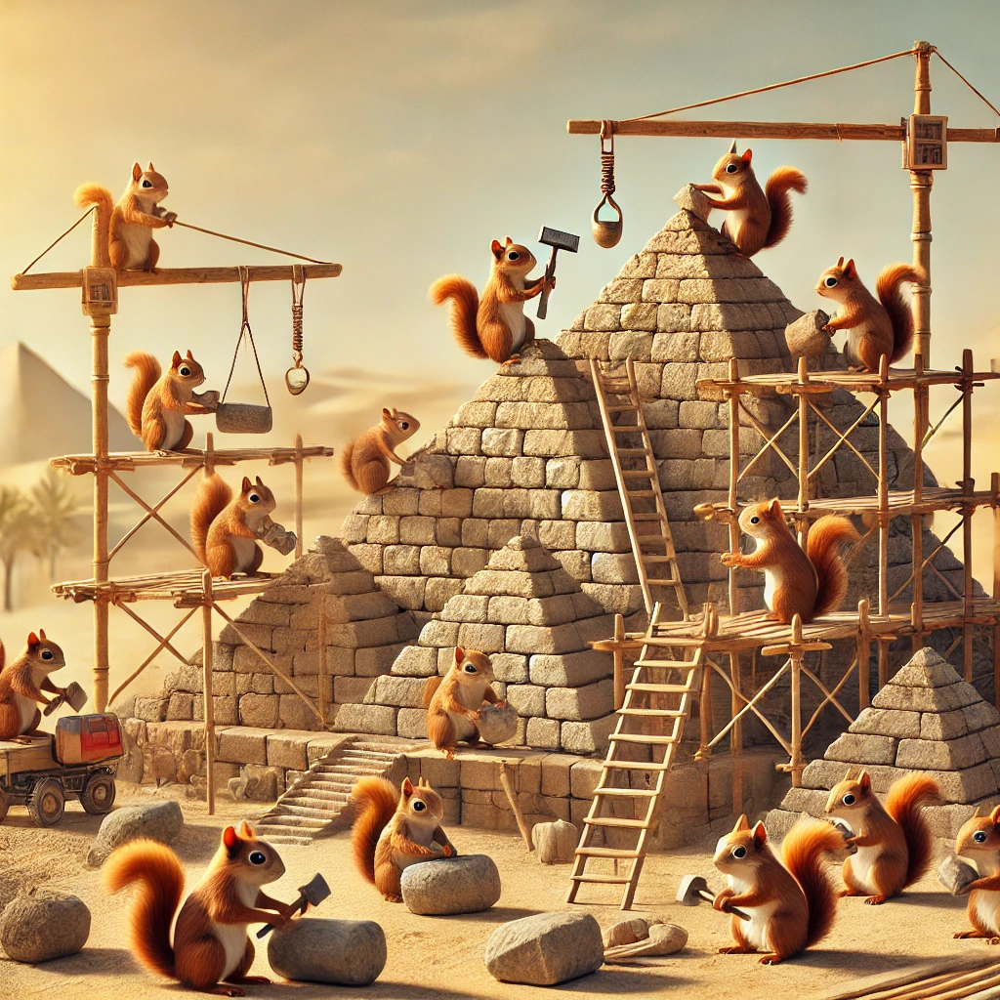

In a shocking revelation that has sent archaeologists into a state of collective disbelief, a recently uncovered ancient text suggests that the pyramids of Egypt were not built by slaves or advanced civilizations, but by really ambitious ancient squirrels. According to the newly discovered scroll, titled “The Nutty Architects of the Ancient World”, the small, bushy-tailed rodents were the masterminds behind the construction of the iconic monuments. Experts have spent years pondering over the massive stone blocks, but now, the evidence seems to point to thousands of squirrels, armed with nothing but sticks, sheer determination, and an unshakable love for hoarding.
Dr. Alistair Nutkin, a leading historian in the field of “Squirrel Architecture,” uncovered this game-changing document during a routine dig near the Great Pyramid. "It was right there, hidden in the dirt—an entire blueprint for the pyramids, complete with detailed squirrel pawprints and a series of cryptic squirrel hieroglyphs," Nutkin said, staring wildly at the sky. "I’ve always suspected something was off about the whole ‘slaves building pyramids’ narrative, and now we have the truth. The squirrels were clearly the only creatures with the raw engineering genius needed for such a colossal project.”
To understand how the squirrels managed to move blocks weighing several tons, Nutkin’s team theorizes that the squirrels used “ingenious” techniques like organizing themselves into pyramid-shaped formations to create a rolling effect. The squirrels, armed with acorns, were able to signal each other in a complex system of chirps, squeaks, and tail flicks. "You know, squirrels have a lot of pent-up energy. Give them a few thousand years, and suddenly you have the workforce to create something like the Great Pyramid," Nutkin added.
Skeptics have already dismissed these findings as "preposterous" and "probably the most absurd thing they've ever heard," but Nutkin is undeterred. "Once you open your mind to the possibility of hyper-intelligent squirrels, the answers become clear. The ancient Egyptians were just really good at providing snacks."
